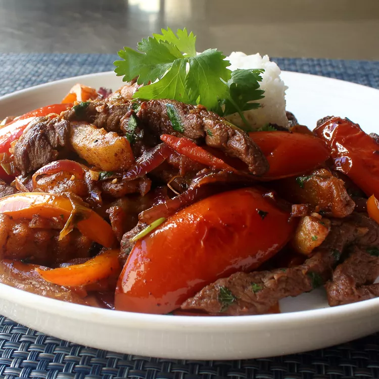

Lomo Saltado - Peruvian Steak Stir-Fry

Description
Welcome to the world of lomo saltado, a star dish from the vibrant and diverse cuisine of Peru. This dish combines the heartiness of stir-fried sirloin steak with a splash of soy sauce, red onions, tomatoes, and crispy French fries. A hint of ají amarillo, a mild Peruvian chili, gives it a unique twist. Paired with a serving of white rice, it's a treat that excites food lovers around the world.
Lomo saltado is more than just a meal, it's a global culinary adventure on a plate. Its story connects Peru's local ingredients like potatoes and ají amarillo, the Spanish additions of beef and rice, and Chinese influences like stir-frying and soy sauce. Cooking this dish is a fun journey in itself, and its versatility means you can adapt it to your liking. Whether you prefer it in a sandwich, as a filling for empanadas, or just as is, lomo saltado is a delicious dish full of possibilities.
Ingredients
- 1.5 pounds of sirloin steak, cut into strips or cubes
- 1 red onion, chopped into large slices
- 2 tomatoes, cut into 8 slices each
- 1 yellow chili pepper (ají amarillo), thinly sliced with veins and seeds removed
- 1 teaspoon of freshly minced garlic
- 2 tablespoons of olive oil
- 1.25 pounds of cooked white rice
- 11 ounces of thick potato slices, prepared for frying
- 1/2 cup of beef broth
- 4 tablespoons of soy sauce
- 4 tablespoons of plain vinegar
- A handful of cilantro leaves
- 1/4 teaspoon of ground oregano
- 1 teaspoon of freshly crushed black pepper
- 1 teaspoon of ground cumin
- Salt, to taste
Directions
-
Heat a pan. Fry the potato slices in vegetable oil and set aside until needed.
-
Cut the sirloin steak into strips or cubes. Marinate them in a mixture of cumin, salt, 4 tablespoons of vinegar, 1 tablespoon of olive oil, black pepper, and soy sauce for 10 minutes before cooking.
-
In a wok, heat 1 tablespoon of olive oil over high heat. Strain and remove the steak strips from the marinade, and fry them for about 4-5 minutes or until sealed.
-
Add the onion, ají amarillo chili pepper, and garlic paste to the wok. Fry for 1 minute while continuously moving the wok, and then add the beef stock.
-
Add the tomato to the wok and fry the ingredients for 30 seconds. Finally, add the ground oregano and French fries, and toss everything together for another 10 seconds to integrate all the ingredients.
-
Serve immediately with white rice and decorate with a few cilantro leaves. Sit back and enjoy the flavor of this timeless classic of Peruvian cuisine!
Return to main page